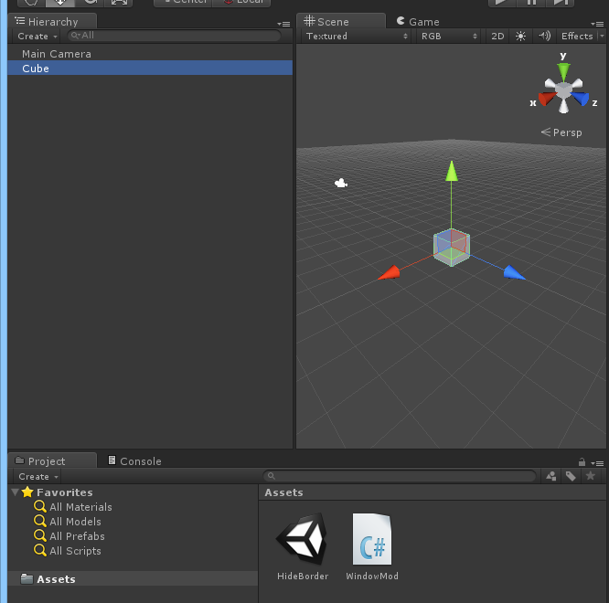

UnitySharedModは、Unityと天翔記を連動させるサンプルです。
Unityを所持してる方にのみ役立つ情報となります。
開発ツール「Unity」で作成したアプリケーションと、「天翔記」の間で、
Modを中継点とするようなミニマムサンプルとなっています。
扱いとしては「 一般Mod 」となります。
天翔記だけではなく、「Unityでwin32ネイティブアプリに絡めたソフト制作」のヒントの１つでもあります。
まず、UnitySharedMod.dll は一般Modですので、「天翔記フォルダ」に配置します。
Unityで、何かゲームオブジェクトを作成し、該当のゲームオブジェクトスクリプトとして、
以下のようにこのUnitySharedModを呼び出します。

using System;
using System.Runtime.InteropServices;
using UnityEngine;
public class WindowMod : MonoBehaviour
{
[DllImport("../UnitySharedMod.dll")]
static extern void OnUnityInitialize();
[DllImport("../UnitySharedMod.dll")]
static extern void OnUnityFinalize();
void Start ()
{
OnUnityInitialize();
}
void OnApplicationQuit()
{
OnUnityFinalize();
}
}
あとは、ファイルに添付されているソースを見てください。